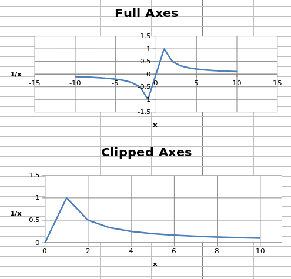
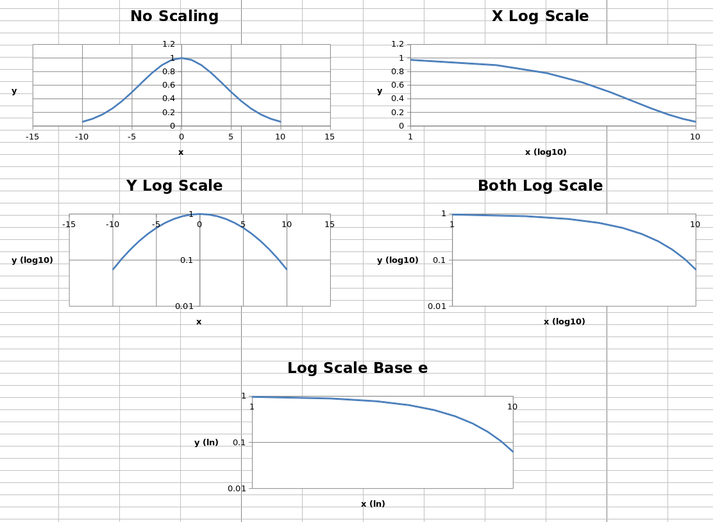
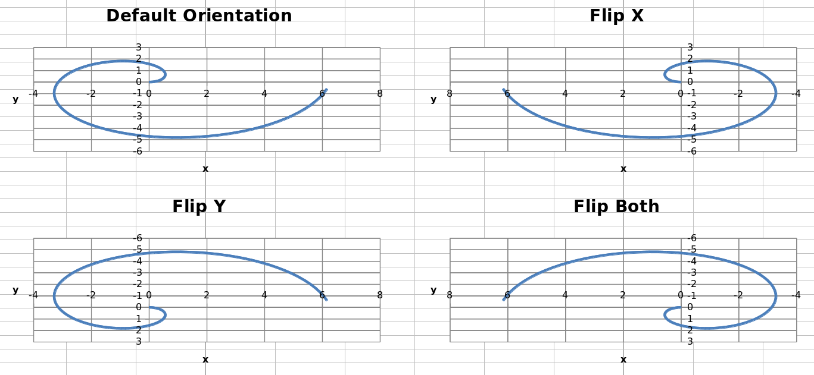

Axis Limits and Scale
Minima and Maxima
Axis minimum and maximum values can be set manually to display specific regions on a chart.
from fastpyxl import Workbook
from fastpyxl.chart import (
ScatterChart,
Reference,
Series,
)
wb = Workbook()
ws = wb.active
ws.append(['X', '1/X'])
for x in range(-10, 11):
if x:
ws.append([x, 1.0 / x])
chart1 = ScatterChart()
chart1.title = "Full Axes"
chart1.x_axis.title = 'x'
chart1.y_axis.title = '1/x'
chart1.legend = None
chart2 = ScatterChart()
chart2.title = "Clipped Axes"
chart2.x_axis.title = 'x'
chart2.y_axis.title = '1/x'
chart2.legend = None
chart2.x_axis.scaling.min = 0
chart2.y_axis.scaling.min = 0
chart2.x_axis.scaling.max = 11
chart2.y_axis.scaling.max = 1.5
x = Reference(ws, min_col=1, min_row=2, max_row=22)
y = Reference(ws, min_col=2, min_row=2, max_row=22)
s = Series(y, xvalues=x)
chart1.append(s)
chart2.append(s)
ws.add_chart(chart1, "C1")
ws.add_chart(chart2, "C15")
wb.save("minmax.xlsx")

Note
In some cases such as the one shown, setting the axis limits is effectively equivalent to displaying a sub-range of the data. For large datasets, rendering of scatter plots (and possibly others) will be much faster when using subsets of the data rather than axis limits in both Excel and Open/Libre Office.
Logarithmic Scaling
Both the x- and y-axes can be scaled logarithmically. The base of the logarithm can be set to any valid float. If the x-axis is scaled logarithmically, negative values in the domain will be discarded.
from fastpyxl import Workbook
from fastpyxl.chart import (
ScatterChart,
Reference,
Series,
)
import math
wb = Workbook()
ws = wb.active
ws.append(['X', 'Gaussian'])
for i, x in enumerate(range(-10, 11)):
ws.append([x, "=EXP(-(($A${row}/6)^2))".format(row = i + 2)])
chart1 = ScatterChart()
chart1.title = "No Scaling"
chart1.x_axis.title = 'x'
chart1.y_axis.title = 'y'
chart1.legend = None
chart2 = ScatterChart()
chart2.title = "X Log Scale"
chart2.x_axis.title = 'x (log10)'
chart2.y_axis.title = 'y'
chart2.legend = None
chart2.x_axis.scaling.logBase = 10
chart3 = ScatterChart()
chart3.title = "Y Log Scale"
chart3.x_axis.title = 'x'
chart3.y_axis.title = 'y (log10)'
chart3.legend = None
chart3.y_axis.scaling.logBase = 10
chart4 = ScatterChart()
chart4.title = "Both Log Scale"
chart4.x_axis.title = 'x (log10)'
chart4.y_axis.title = 'y (log10)'
chart4.legend = None
chart4.x_axis.scaling.logBase = 10
chart4.y_axis.scaling.logBase = 10
chart5 = ScatterChart()
chart5.title = "Log Scale Base e"
chart5.x_axis.title = 'x (ln)'
chart5.y_axis.title = 'y (ln)'
chart5.legend = None
chart5.x_axis.scaling.logBase = math.e
chart5.y_axis.scaling.logBase = math.e
x = Reference(ws, min_col=1, min_row=2, max_row=22)
y = Reference(ws, min_col=2, min_row=2, max_row=22)
s = Series(y, xvalues=x)
chart1.append(s)
chart2.append(s)
chart3.append(s)
chart4.append(s)
chart5.append(s)
ws.add_chart(chart1, "C1")
ws.add_chart(chart2, "I1")
ws.add_chart(chart3, "C15")
ws.add_chart(chart4, "I15")
ws.add_chart(chart5, "F30")
wb.save("log.xlsx")
This produces five charts that look something like this:

The first four charts show the same data unscaled, scaled logarithmically in
each axis and in both axes, with the logarithm base set to 10. The final chart
shows the same data with both axes scaled, but the base of the logarithm set to
e.
Axis Orientation
Axes can be displayed “normally” or in reverse. Axis orientation is controlled
by the scaling orientation property, which can have a value of either
'minMax' for normal orientation or 'maxMin' for reversed.
from fastpyxl import Workbook
from fastpyxl.chart import (
ScatterChart,
Reference,
Series,
)
wb = Workbook()
ws = wb.active
ws["A1"] = "Archimedean Spiral"
ws.append(["T", "X", "Y"])
for i, t in enumerate(range(100)):
ws.append([t / 16.0, "=$A${row}*COS($A${row})".format(row = i + 3),
"=$A${row}*SIN($A${row})".format(row = i + 3)])
chart1 = ScatterChart()
chart1.title = "Default Orientation"
chart1.x_axis.title = 'x'
chart1.y_axis.title = 'y'
chart1.legend = None
chart2 = ScatterChart()
chart2.title = "Flip X"
chart2.x_axis.title = 'x'
chart2.y_axis.title = 'y'
chart2.legend = None
chart2.x_axis.scaling.orientation = "maxMin"
chart2.y_axis.scaling.orientation = "minMax"
chart3 = ScatterChart()
chart3.title = "Flip Y"
chart3.x_axis.title = 'x'
chart3.y_axis.title = 'y'
chart3.legend = None
chart3.x_axis.scaling.orientation = "minMax"
chart3.y_axis.scaling.orientation = "maxMin"
chart4 = ScatterChart()
chart4.title = "Flip Both"
chart4.x_axis.title = 'x'
chart4.y_axis.title = 'y'
chart4.legend = None
chart4.x_axis.scaling.orientation = "maxMin"
chart4.y_axis.scaling.orientation = "maxMin"
x = Reference(ws, min_col=2, min_row=2, max_row=102)
y = Reference(ws, min_col=3, min_row=2, max_row=102)
s = Series(y, xvalues=x)
chart1.append(s)
chart2.append(s)
chart3.append(s)
chart4.append(s)
ws.add_chart(chart1, "D1")
ws.add_chart(chart2, "J1")
ws.add_chart(chart3, "D15")
ws.add_chart(chart4, "J15")
wb.save("orientation.xlsx")
This produces four charts with the axes in each possible combination of orientations that look something like this:
